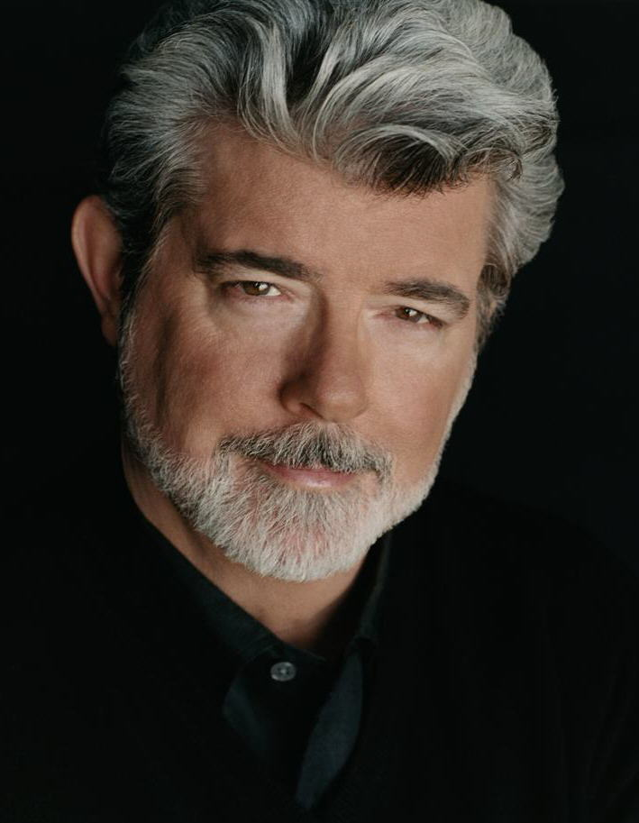
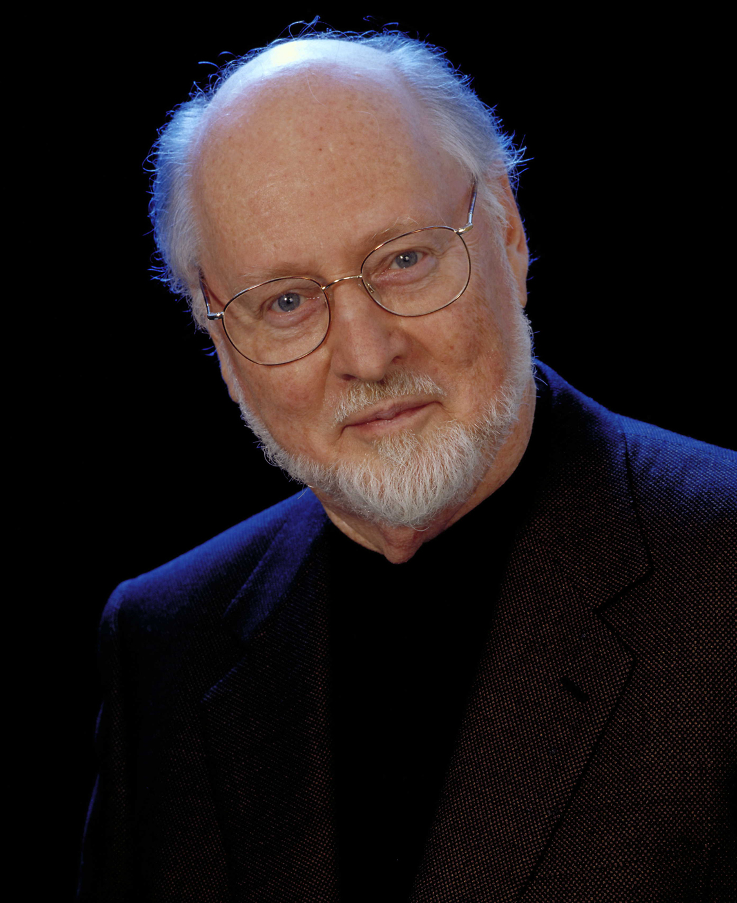
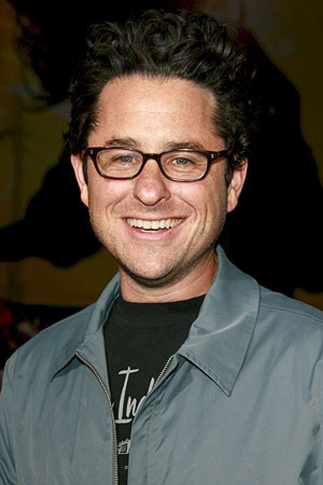

George Lucas
O criador de Star Wars, um dos maiores filmes de ficção científica de todos os tempos, nasceu em Modesto, Califórnia, em 14 de maio de 1944 e nem pensava em trabalhar com cinema. George Walton Lucas Junior queria mesmo era ser piloto de corridas de carro. Entretanto, depois que ele terminou o segundo grau, um acidente grave acabou com seus sonhos de piloto. O acidente, que mudou sua vida, impediu Lucas de se tornar piloto como ele queria, mas por outro lodo, abriu as portas para que ele se tornasse um dos melhores cineastas de todos os tempos. A paixão por carros e velocidade, claro, continuam até hoje e foram a inspiração para seu primeiro filme de sucesso “American Graffiti” de 1973.Lucas que já tinha certa afinidade por câmeras acabou se transferindo para a University of Southern California, uma conceituada escola de cinema, onde fez seu primeiro filme de ficção científica: “THX-1138:4EB” com o qual ganhou o prêmio do “National Stundent Film Festival” em 1967-68. Na época ele havia conhecido Francis Ford Coppola (que já havia dirigido “Finian’s Rainbow” pela Warner Brothers) e acabaram se tornando amigos e criando uma companhia de cinema chamada “American Zoetrope” em 1969.
Scott M. Gimple
Nascido no dia 8 de fevereiro de 1932, John Towner Williams é filho do baterista de Jazz, Johnny Williams, que tocou no quinteto Raymond Scott. Aos 16 anos de idade, mudou com a família para Los Angeles, onde se formou, em 1950, na North Hollywood High School. No mesmo ano, frequentou a Universidade da Califórnia, em Los Angeles (UCLA), e a Los Angeles City College, onde estudou orquestração, lecionado por Robert Van Eps, músico associado da MGM, e pelo compositor Mario Castelnuovo-Tedesco. No ano seguinte, Williams seria convocado para a Força Aérea Americana, onde tocou pela Banda do ramo. Em 1955, o compositor entrou na Julliard School, de Nova York, sendo ensinado pela pianista Rosina Lhévinne, que o encorajou a compor. Durante esse tempo, John Williams tocou piano em boates de Jazz. Depois de Vale das Bonecas, John Williams venceria sua primeira estatueta depois de duas indicações. Na ocasião, foi premiado por seu trabalho em Um Violinista no Telhado, filme de 1971. Sua segunda estatueta viria cinco anos depois pelo clássico Tubarão, em sua segunda de um total de 28 colaborações com o diretor Steven Spielberg. Venceria o Oscar, ainda, em três outras oportunidades, com os filmes Star Wars (1977), E.T.: O Extraterrestre (1982) e A Lista de Schindler (1993). Nas outras 45 chances, saiu de mãos vazias. Além das cinco vitórias no Oscar, Williams conquistou um total de 56 prêmios em sua carreira, incluindo 26 Grammys, quatro Globos de Ouro e três Emmys, entre outros.
Jeffrey Jacob Abrams (J.J Abrams)
Jeffrey Jacob Abrams (Nova Iorque, 27 de junho de 1966) é um escritor, diretor e produtor de cinema e televisão dos Estados Unidos. Escreveu e produziu vários filmes antes de co-criar a série de televisão Felicity. Ele também criou as série Alias, Lost, Fringe, Undercovers e Alcatraz e dirigiu os filmes Mission: Impossible III, Star Trek, Super 8, Star Trek Into Darkness, Star Wars: The Force Awakens e Star Wars: The Rise of Skywalker. Recentemente, Abrams indicado pessoalmente por Steven Spielberg e consequentemente escolhido para dirigir Star Wars Episódio VII, o primeiro filme da nova fase da franquia recém adquirida pela Disney. Sua sequência, Star Wars: The Last Jedi, dirigida pelo diretor Rian Johnson, apesar de bem avaliada pela crítica, não obteve a aprovação de parte dos fãs e J.J. Abrams foi chamado para finalizar a saga, na direção de Star Wars: The Rise of Skywalker. Entretanto, o último filme da nova trilogia Star Wars não foi tão bem recebido pela crítica e por uma parte dos fãs quanto Star Wars: Episode VII - The Force Awakens. Sua estreia como diretor de cinema foi em 2006 com o filme “Missão Impossível 3”, estrelado por Tom Cruise. Em 2009, dirigiu o reinício da franquia Star Trek. Ao lado de Steven Spielberg, escreveu e dividiu a direção e produção do longa “Super 8” (2011). O diretor também indicou Abrams para dirigir “Star Wars Episódio VII”, primeiro filme da nova fase da franquia adquirida pela Disney.